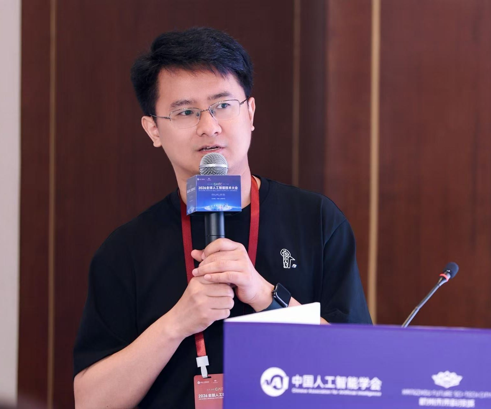

wechat: [71, 27131, 13312, 40657]
( tokenized thru gpt-5.x)
Houwen is currently an independent researcher and developer specializing in multimodal generative AI systems. Previously, he led Tencent's Hunyuan multimodal teams, where models built under his oversight secured top-tier performance on LMArena leaderboard and now serve hundreds of millions of daily user queries across Tencent's int/external applications, e.g., Yuanbao. Prior to Tencent, he was a Senior Researcher at Microsoft Research Asia (MSRA, 2018-2024). His research on AI foundations was shipped as core technologies to various Microsoft products, including Azure, Office, Bing, Visual Studio, etc. Also, his innovative algorithms have also gained extensive adoption across academia and industry. Representative works include X-CLIP, TinyViT and EfficientViT - state-of-the-art vision models highlighted as exemplars on HuggingFace - as well as MS-AMP, which has been incorporated as an official model training technique within PyTorch. Houwen has served on the program committees for several top-tier conferences, such as CVPR, ICCV, NeurIPS, and ICLR. He also has undertaken the role of Area Chair for ACM Multimedia and Associated Editor for Pattern Recognition. His technical innovations have been awarded as the winners in several top-tier academic competitions, such as Visual Object Tracking (VOT) Challenge and MIT HACS Temporal Action Localization Challenge. He has also been recognized as one of World's Top 2% Scientists.
News
- Loading latest news...
If this page is opened directly from disk, dynamic preview loading may be blocked by the browser. Use GitHub Pages or a local server to see synced content.
Publications
Loading selected papers...
If this page is opened directly from disk, dynamic preview loading may be blocked by the browser. Use GitHub Pages or a local server to see synced content.
More PapersGroup
- Qi Yang (PhD, UCAS)
- Bolin Ni (PhD, UCAS)
- Yingzhe Peng (PhD, UCAS)
- Wanting Geng (PhD, UCAS)
- Yi Zhang (PhD, UCAS)
- Hailong Sun (PhD, UCAS)
- Kan Wu (PhD, Sun Yat-sen Univ.)
- Xinyu Liu (PhD, CUHK)
- Xin Chen (PhD, DLUT)
- Jinnian Zhang (PhD, UW-Madison)
- Minghao Chen (PhD, Stony Brook Univ.)
- Bin Yan (PhD, DLUT)
- Peiyao Wang (PhD, Stony Brook Univ.)
- Hao Du (BE, City Univ. of HK)
- Qi Li (BE, Tsinghua Univ.)
- Songyang Zhang (PhD, Univ. of Rochester)
- Le Yang (PhD, NWPU)
- Xingyu Ren (PhD, SJTU)
- Hongyuan Yu (PhD, CAS)
- Zhipeng Zhang (PhD, CAS)